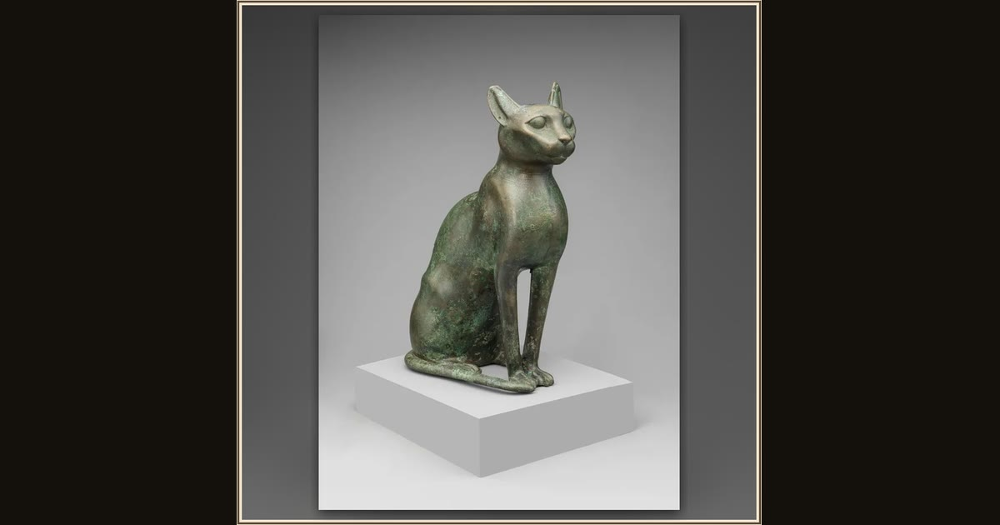

Cat Statuette intended to contain a mummified cat
Ptolemaic Period · 332–30 BCE · met
A seated bronze cat, hollow and made to contain a mummified cat, the kind of burial Herodotus reports for dead cats embalmed and buried in sacred buildings at Bubastis (2.67.1) Explore its place in Herodotus's Histories, Book II, chapter 218.